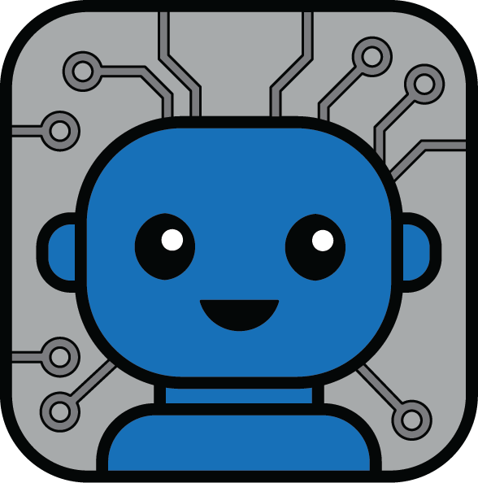

Leader
Count0
Debug Manualoff
Detected IDs
Telemetry
-

Live monitor and command bridge for Leader firmware.
No command sent.
Use this panel to pair and validate the Xbox controller link before teleoperation.
No pairing action started.
Detected IDs
Telemetry
-
Detected IDs
Telemetry
-
Teleoperation idle.
Legend: p = position (raw), v = voltage, t = temperature, m = servo mode. In fast telemetry mode, v/t/m can stay at 0.